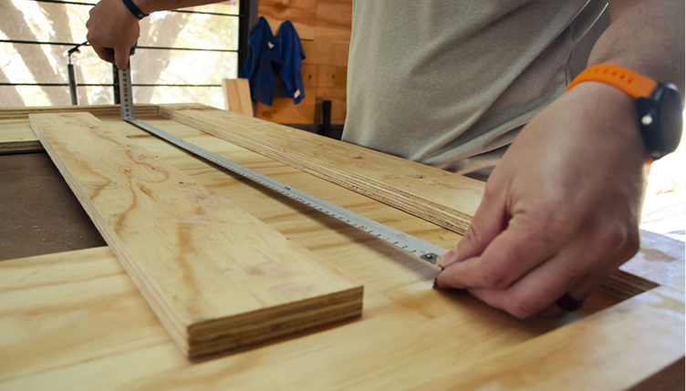

Чтобы вам было удобно грузить и перевозить материалы, мы предусмотрели услугу транспортировочного распила плитной и погонажной
продукции. Распиливаем по торцу — на одну доску не более трёх резов.
Компания существует на рынке с 2008 года и на сегодняшний
день занимает лидирующие позиции в отрасли на территории:
Доставка приобретённого товара осуществляется по согласованному с клиентом адресу — при наличии путей, предназначенных для грузовых
автомобилей. Если подъезд к месту разгрузки невозможен, то машина остановится на максимально близком от него расстоянии, не нарушая ПДД
и
исключая вероятность повреждения транспорта.
Доставка осуществляется в согласованный с покупателем день с 09:00 до 18:00. Менеджер отдела логистики за сутки до согласованного дня
доставки по телефону дополнительно уточняет готовность покупателя принять заказ в назначенную дату. За один час до времени доставки
водитель-экспедитор уведомляет покупателя по телефону о планируемом прибытии.
Время ожидания покупателя водителем-экспедитором составляет 20 минут. По истечение этого времени при отсутствии связи с покупателем
и/или непринятия товара покупателем по обстоятельствам, не зависящим от водителя-экспедитора/продавца, водитель-экспедитор вправе
уехать с места разгрузки. При этом повторная доставка товара оплачивается покупателем отдельно.
Выгрузка товара осуществляется силами покупателя, если не заказаны услуги разгрузка и подъем товаров.
Стоимость доставки зависит от расстояния от склада компании до места выгрузки, веса купленного товара и заказанных покупателем
услуг.
Компания существует на рынке с 2008 года и на сегодняшний
день занимает лидирующие позиции в отрасли на территории:
Краснодарского края;
Ростовской области;
Ставропольского края;
Республики Крым;

Другие услуги
Смотреть все
@@include("_item-service.html", {"title":"Собственная доставка", "icon": "own-delivery",
"text":
'Если наш склад — в вашем городе, а товар — в наличии, мы доставим материалы в течение 24 часов после оформления заказа. В населённые пункты Краснодарского, Ставропольского края и в республику Крым доставим заказ в течение недели. Если материалы нужны срочно — доставим по городу и в ближайшие населённые пункты в день заказа'})
@@include("_item-service.html", {"title":"Транспортировочный распил", "icon": "package",
"text":
'Производится для того, чтобы вы могли загрузить лист любых размеров даже в легковой автомобиль. Распил 1 листа делаем прямо на месте, быстро и бесплатно (ограничение — 2 транспортировочных реза / распил листа на 3 части). При большом объёме работ, требуется уточнение сроков производства.'})
@@include("_item-service.html", {"title":"Консультации по монтажу", "icon": "consultation",
"text":
'Если наш склад — в вашем городе, а товар — в наличии, мы доставим материалы в течение 24 часов после оформления заказа. В населённые пункты Краснодарского, Ставропольского края и в республику Крым доставим заказ в течение недели. Если материалы нужны срочно — доставим по городу и в ближайшие населённые пункты в день заказа'})